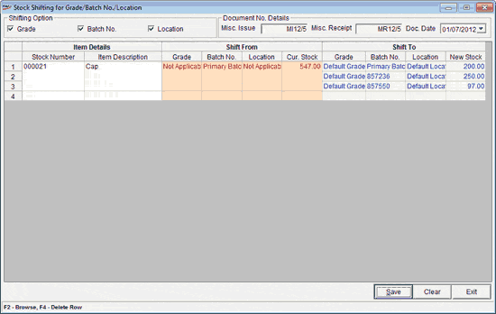

The grade browse window is displayed as shown.

Search Results: Helps to search grade.
Code and Description: Displays the catalogued grade code and description. Select the desired grade from which the stock needs to be shifted.
This option is used to shift stock from one Grade / Batch / Location to another Grade / Batch / Location. New batches can be created on the fly and the selected items can be moved to these batches. Also multiple stock number can be shifted at one go.
How to reach: Stock > Stock Shifting
The Stock Shifting window is displayed as shown.

Shifting Option
Grade: Select to shift items available in stock to different grades. The items can be shifted partially or fully.
Batch: Select to shift items available in stock to different batches. The items can be shifted partially or fully.
Location: Select to shift items available in stock to different locations. The items can be shifted partially or fully.
Document Details
Misc. Issue: Displays the prefix and document number.
Misc. Receipt: Displays the prefix and document number.
Doc Date: Select date. By default displays Shoper open date.
Item Details
Stock Number: Enter the stock number or press F2 to browse and select the stock numbers for which the stock needs to be shifted to corresponding Batch / Grade or locations. Multiple stock numbers can be selected during browse.
Item Description: Displays the item description as catalogued in the Item Master.
Shift From
Grade: Press F2 to browse and select the grade if different grades are available for the selected SKU. Click here for more details.
Batch: Press F2 to browse and select the batch if different batches are available for the selected SKU. Click here for more details.
Location: Press F2 to browse and select the location if different locations are available for the selected SKU. Click here for more details.
Cur.Stock: Displays the current stock based on the batch / grade / location selection done in the Shift From column.
Shift To
Grade: Press F2 to browse and select the grade to which the stock needs to be shifted. Click here for more details.
Batch: Press F2 to browse and select the batch to which the stock needs to be shifted. If the desired batch is not available, it can be created in this window. Click here for more details.
Location: Press F2 to browse and select the location to which the stock needs to be shifted. Click here for more details.
Note: In cases multiple prices were defined before enabling batch, then different batches have to be created with batch-wise prices according to the defined multiple prices. The stock shifting has to be done to the respective batches.